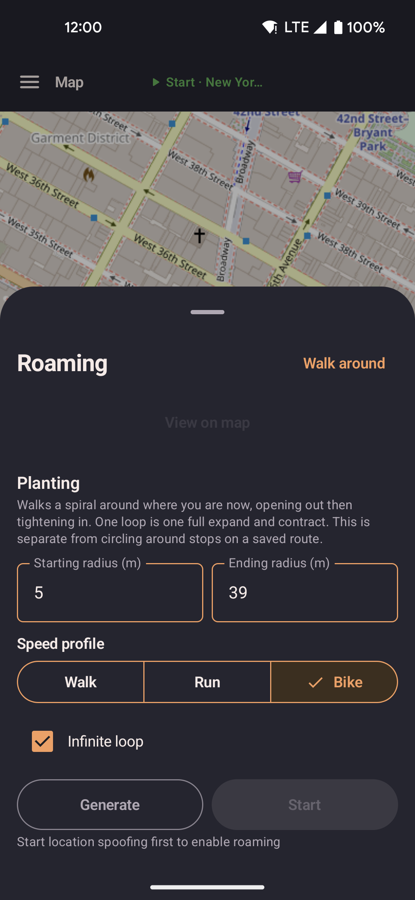

Map
The map screen shows your location as a marker that moves with your position. It has buttons for search, paste, routes, favorites, and roaming. Map tiles come from Settings → Menus → Map source. If the map does not appear, see Troubleshooting.

- When you open the app with spoofing on, the map loads. With spoofing off, the Home screen loads first. Open the side menu to reach the map.
- If you have never set a position, the map starts at your real location.
- Your marker appears as you move. Drag the map to stop it following your marker.
- Tap the center button to resume following. When spoofing is off, it centers on your real location but does not change your saved position.
- When a walk, route, or roam is paused, its button turns orange. Tap to open the controls. Resume turns it green again. Idle buttons stay grey.
Result: Your marker appears on the map and moves when you move or steer it.
Search for a place
- Tap the search button (magnifying glass).
- Type a place name, address, or landmark.
- Pick a result from the list to place a marker there.
- Long-press the marker to walk or teleport.
Result: A marker appears at the searched location on the map.
- Recent searches appear before you type. They are saved on your device.
- Searching does not move your location. You choose to walk or teleport from the marker.
- Have exact coordinates instead? Use Paste coordinates.
- See Settings → External services for privacy details.
Paste coordinates
Prerequisites: Turn on the paste button in Settings → Menus → App Features.
- Tap the paste button (clipboard icon) on the map or widget.
- Paste or type coordinates. Use decimal degrees like
11.0127769, 79.48065, or degrees/minutes/seconds like37°34'11.4"N 127°00'17.9"E. - Paste appends lines. The app ignores lines it does not recognize.
- Choose an action: Teleport, Walk, Walk via roads, Save favorite, or Save route.
- Tap Start route to play the points without saving them.
Result: Your marker jumps to the point, starts walking to it, or the place or route appears in your list.

- The box grows to 10 lines, then scrolls. Use Select all and Clear all below it.
- With one point, the sheet offers Teleport, Walk, and Walk via roads.
- With two or more points, the sheet offers route options and Start route.
- Teleport works offline. Walk via roads needs the internet. If it fails, you walk in a straight line.
- Save favorite stores the first point. With a list, it asks which point to keep.
- Save route needs two or more points. A later paste never overwrites a saved route, even with the same name.
- With multiple points, choose Loop, Planting, Reverse, Return to location, Follow roads, or Teleport between waypoints. See Routes for details.
- Start route plays the points without saving. The next paste replaces it.
- If there are no valid coordinates, the app says so.
Open a GPX file
- Open a GPX file from Files, Downloads, Share, or a chat app.
- The paste sheet opens with the title "Open GPX" and the points already filled in.
- Choose an action: Teleport, Walk, Walk via roads, Save favorite, Save route, or start without saving.
Result: The file's points fill the paste box, ready for the action you pick.
- Save route suggests the file name. If the file is not valid GPX, a short message says so.
Tap to move
- Long-press a point on the map.
- Pick an action from the sheet that appears.
Result: Your marker jumps to the point, or starts walking toward it.
| Action | What it does |
|---|---|
| Teleport here | Jump to the point at once. Any running or paused route or roam ends first. Works offline. If spoofing is paused, tap Start first. |
| Walk here | Walk to the point in a straight line at your current speed. |
| Walk here via roads | Walk along real roads at your current speed. If roads cannot load, walk in a straight line. |
| Add next point | While walking, add a stop. The first tap chains your start, destination, and new point. Later taps add more stops. If you are following roads, the new stretch does too. |
| Share this location | Open the share menu with a link to the point. See Location Links. |
Walking via roads, road-following routes, and roaming load paths from an online service. If the service is unreachable, the app uses a straight line for that stretch.
While a saved route plays: Stop route and teleport, Stop route and walk here, or Finish route and walk here. The Finish option adds the point to the route's end.
Teleport wait
Some games block quick jumps to prevent impossible travel. Before you teleport, the app shows a suggested wait based on distance jumped. The message is advisory only. Nothing is blocked.
- Check the wait time shown when you tap to teleport.
- If needed, wait the suggested time before teleporting again.
Result: A wait timer shows. Wait it out before the next teleport to match the game's travel rules.
- The wait shows on the map's tap sheet, favorites lists, the floating widget, and Group Sync follower screen.
- It reads "No wait needed" when the wait is over or you have not teleported yet.
- The clock starts at each teleport, from any screen. Walking never affects the clock.
| Jump distance | Suggested wait |
|---|---|
| Under 10 m | None |
| 10 m | 3 seconds |
| 100 m | 15 seconds |
| 500 m | 30 seconds |
| 1 km | 2 minutes |
| 5 km | 6 minutes |
| 10 km | 11 minutes |
| 25 km | 14 minutes |
| 30 km | 22 minutes |
| 65 km | 25 minutes |
| 81 km | 35 minutes |
| 100 km | 45 minutes |
| 250 km | 1 hour |
| 500 km | 1 hour 15 minutes |
| 750 km | 1 hour 30 minutes |
| 1,000 km or more | 2 hours |
Each row covers the listed distance until the next row. Distance is a straight line from your current position to the target.
Routes sheet
- Tap the routes button on the map.
- Tap a route to see a preview of its path.
- Choose Start, Loop, or Reverse.
- Use Previous stop and Next stop to skip waypoints. A count like
3/12shows your current stop.
Result: The route plays from the map without opening another screen.

- See Replay options for more details.
Favorites sheet
- Tap the favorites button on the map.
- Tap a favorite to pick an action: Set location (teleport), Walk to location (straight line), or Walk via roads.
- Type in the search box to filter by name or area. Closing the sheet clears the search.
- Tap Save current location to add where you are now as a favorite.
Result: Your marker moves to the favorite, or your current position appears in the favorites list.

- Each favorite shows its straight-line distance. Real road distance is longer.
- Teleport ends any running or paused route or roam.
Roaming sheet
Prerequisites: Pause or stop a playing route first. Only one roaming mode can run at a time.
- Tap the roaming button on the map.
- Choose a mode: Walk around the block or Planting.
- Set radius, distance, speed, or loop count. Defaults are in Settings → Roaming.
- Tap Generate to see the path on the map before you start.
- Tap Start roaming.
Result: Your marker moves in the chosen pattern and keeps moving with the screen off.

- Walk around the block: Random spots within a radius.
- Planting: A spiral that opens out, then tightens. That is one loop.
- Changing speed in the app or on the widget overrides your choice once roaming starts.

Wobble radius circle
- Turn on Debug stats in Settings.
- A faint circle appears around your marker on the map.
- Adjust the Idle radius and Moving radius settings to change the circle size.
Result: The circle shows the wobble range. Use it to tune radius settings.